Plantilla actual
A continuación se muestra un listado con algunos de los jugadores más importantes del plantel actual del Liverpool FC, junto con su posición y su número de camiseta.
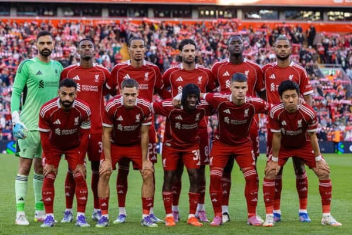
| Foto | Jugador | Posición | Dorsal |
|---|---|---|---|
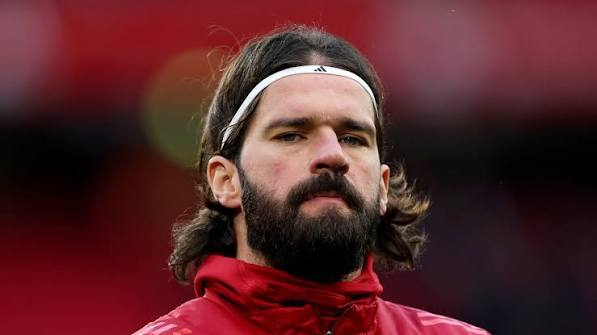 |
Alisson Becker | Portero | 1 |
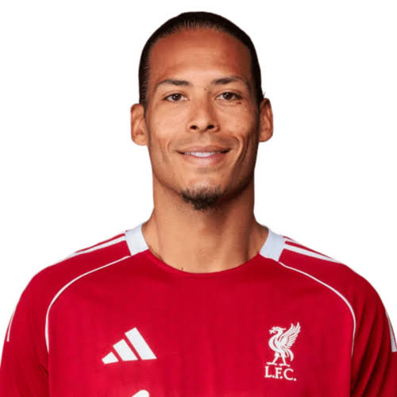 |
Virgil van Dijk (capitán) | Defensa central | 4 |
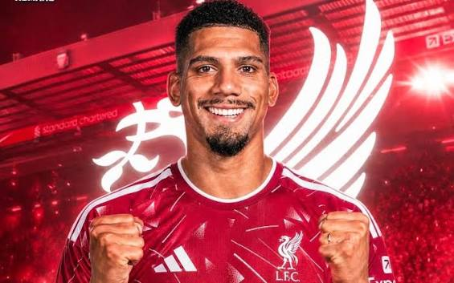 |
Ronald Araujo | Defensa central | 33 |
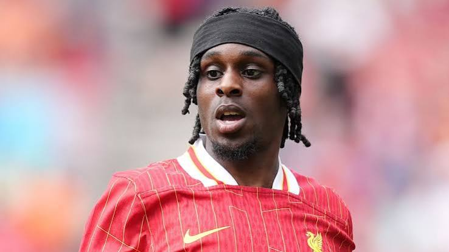 |
Jeremie Frimpong | Lateral derecho | 30 |
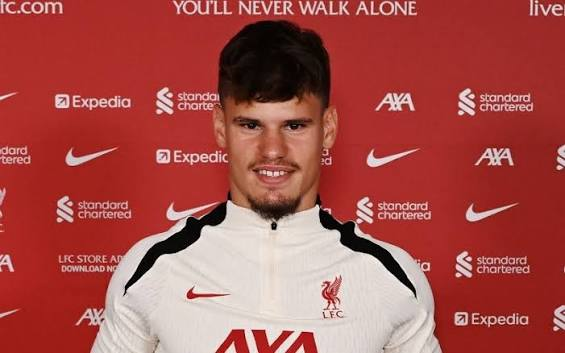 |
Milos Kerkez | Lateral izquierdo | 6 |
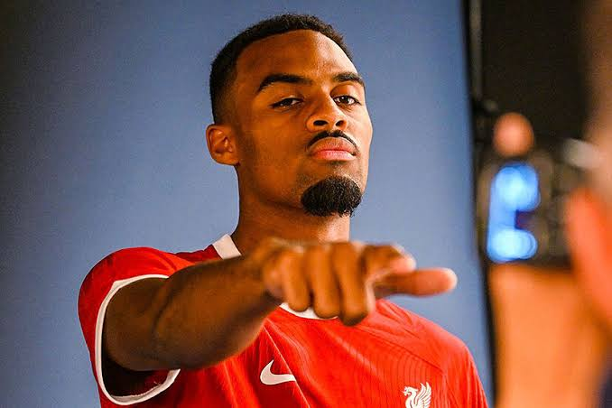 |
Ryan Gravenberch | Mediocampista | 38 |
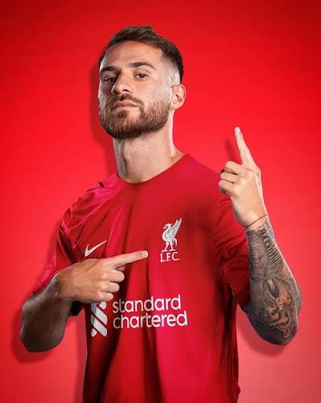 |
Alexis Mac Allister | Mediocampista | 10 |
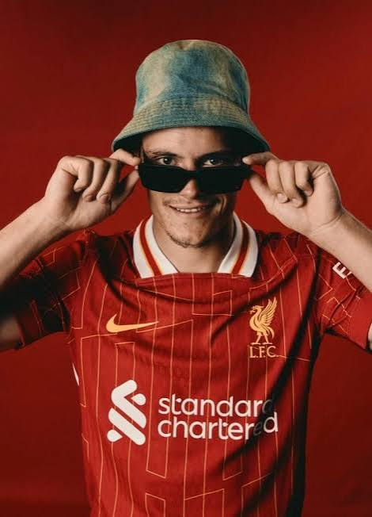 |
Florian Wirtz | Mediocampista ofensivo | 7 |
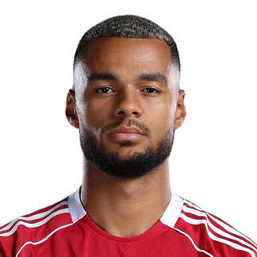 |
Cody Gakpo | Delantero | 18 |
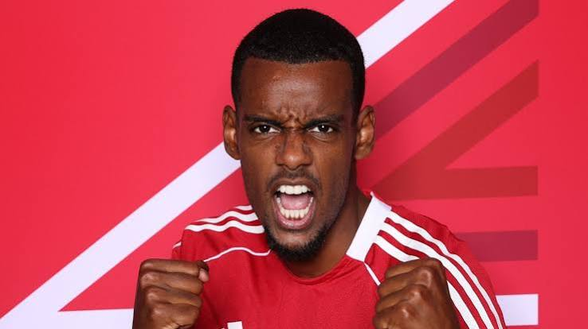 |
Alexander Isak | Delantero | 9 |
Esta lista es solo una muestra de algunos jugadores destacados de la temporada actual y puede cambiar según las transferencias de cada mercado de fichajes.
En memoria de Diogo Jota
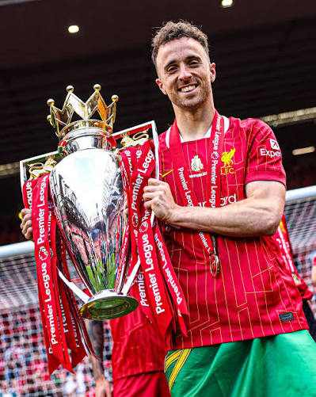
Diogo Jota vistió la camiseta número 20 del Liverpool y fue parte fundamental del equipo que ganó la Premier League y otros títulos importantes para el club. Su fallecimiento en julio de 2025 dejó una huella profunda en toda la afición.
Esta sección es un espacio de homenaje para recordarlo como jugador y como persona. Su número 20 permanece como un tributo dentro de la historia reciente del Liverpool FC.
Volver al inicio.